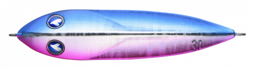
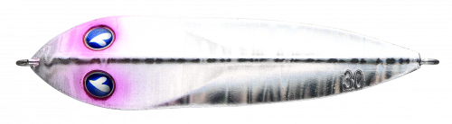
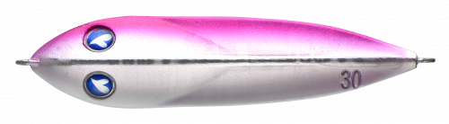
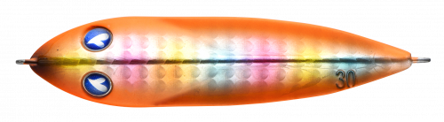

シーライド
（SeaRide）
シーライドはBlueBlue（ブルーブルー）のメタルジグです。
BlueBlueの始まりとなった第一弾ルアーで、前後のアイを結び変えるだけで2通りの使い方ができる画期的なジグ。順付けではスライドアクションとスローフォール、逆付けでは飛距離を出してのただ巻きとバックスライドフォールで誘えます。重さがひと目で分かる刻印入りにリニューアルされています。

画像出典:BlueBlue公式HP
スペック
- メーカー
- BlueBlue（ブルーブルー）
- タイプ
- メタルジグ
- ウェイト
- 20g／30g／40g／60g
- フック
- ティンセル付きアシストフック標準装備
- ターゲット
- 青物・シーバス・ヒラメ・マダイほか
- 価格
- 880円〜1,020円（税別）
▼今すぐチェック

シーライドの特徴
結び変えるだけで、2通りのアクションを使い分けられるメタルジグ
-
順付けでスライド＆スローフォール
目玉のある方のアイに結ぶ「順付け」では、軽くしゃくるだけで予測不能なスライドアクションとスローフォールを出せます。イルカが泳ぎ回るようなドルフィンアクションが持ち味です。
-
逆付けで飛距離とただ巻き
目玉と逆のアイに結ぶ「逆付け」では、しっかり飛ばせてただ巻きでスイミング。テンションを抜けばバックスライドフォールで、順付けで反応しない魚を誘えます。
-
重さがひと目で分かる刻印
リニューアルでジグ本体にg数を刻印。ルアーボックスの中から目当ての重さをすぐに見つけられ、刻印なので消える心配もありません。
シーライドの使い方
順付けの基本は、キャスト後にボトムまで沈め、ロッドを軽くあおってはフォールさせるジャーク＆フォール。スライドしながらゆっくり落ちる間に食わせます。
逆付けでは、遠投してからただ巻きでスプーンのように引いたり、途中でテンションを抜いてバックスライドさせたりして誘います。反応がないときは結び変えて、もう一方のアクションを試してみましょう。
シーライドの得意な状況
ショアからの青物狙いのライトショアジギングを中心に、サーフのヒラメ、港湾のシーバス、ライトジギングのマダイまで幅広く使えます。同じジグで2通りの誘い方を試したいときに便利です。
ワンポイント
20g・30gは港湾やライトショアジギング、40g・60gは遠投が必要なサーフや磯、流れの強い場所に。水深と潮の速さで重さを選びましょう。
シーライドのウェイトの使い分け
| モデル | 全長／自重 | 得意な場面 |
|---|---|---|
| 20g | 20g | 港湾や浅い場所、ライトタックルでのライトショアジギングに |
| 30g | 30g | ライトショアジギングの基準。サーフや堤防で使いやすい |
| 40g | 40g | 遠投が必要なサーフや、少し深い場所に |
| 60g | 60g | 磯や潮の速い場所、ショアジギングでの青物狙いに |
ブルーブルーにはロングタイプのシーライドロングや、小型のシーライドミニもあります。ベイトの形や大きさに合わせて選びましょう。
人気カラー
公式ラインナップから4色を紹介します（カラー名は公式の表記のまま）。

#07 ブルピンブルーとピンクの定番カラー。朝マズメの青物狙いに。

#08 オールシルバー全面シルバーでフラッシングが強いカラー。日中の晴れた日や澄み潮に。

#10 ピンクシルバーグローピンクとシルバーにグローをプラス。マズメの暗い時間帯や濁りに。

#11 オレンジキャンディオレンジ系のアピールカラー。濁りや曇りの日に目立たせたいときに。
画像出典:BlueBlue公式HP
シーライドに似ているルアー
-
 ジグパラショート
メジャークラフト
詳細はこちら＞
ジグパラショート
メジャークラフト
詳細はこちら＞
20g〜60gまでそろうセンターバランスのメタルジグ。同じ重さの定番ジグとして。
-
 ジャックアイマキマキ
ハヤブサ
詳細はこちら＞
ジャックアイマキマキ
ハヤブサ
詳細はこちら＞
ただ巻き専用のブレードジグ。しゃくらずに巻くだけで誘いたいときに。
-
 ボンバースピン
メジャークラフト
詳細はこちら＞
ボンバースピン
メジャークラフト
詳細はこちら＞
ブレード付きのメタルジグ。ブレードのフラッシングで強くアピールしたいときに。